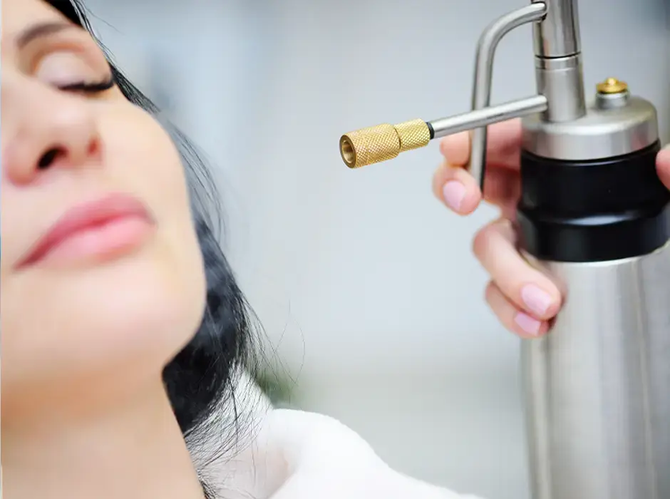
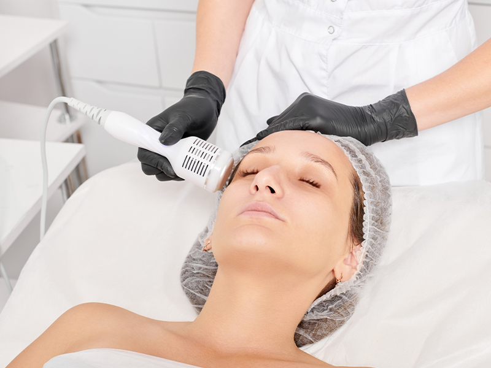
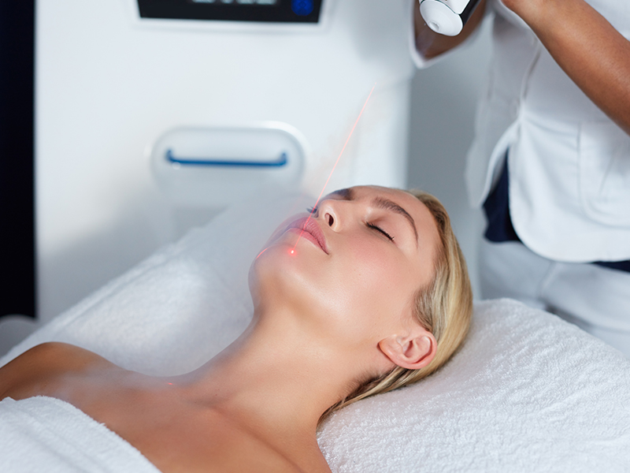
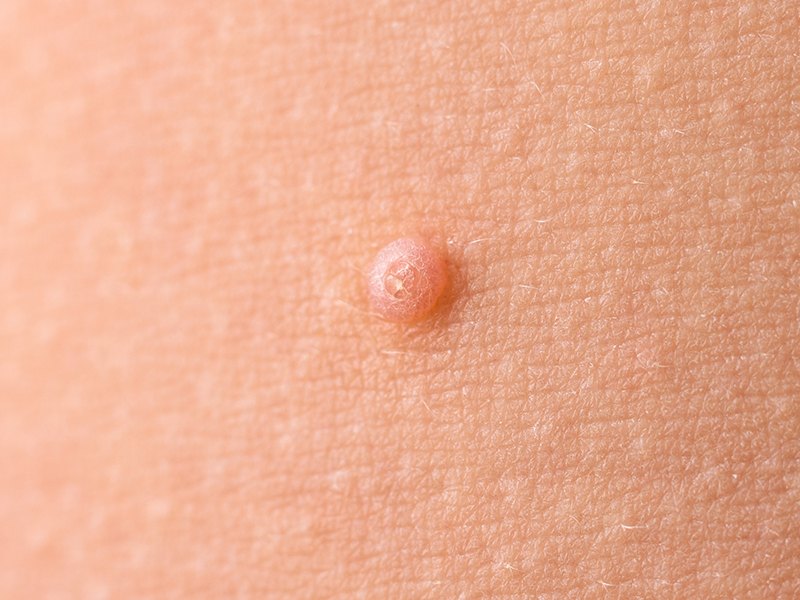
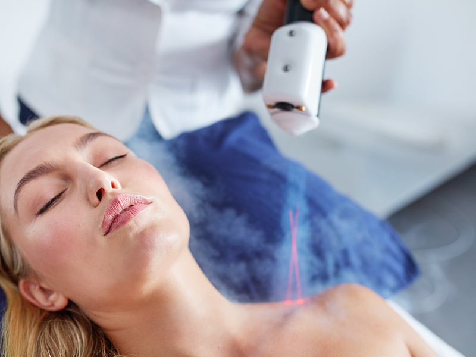
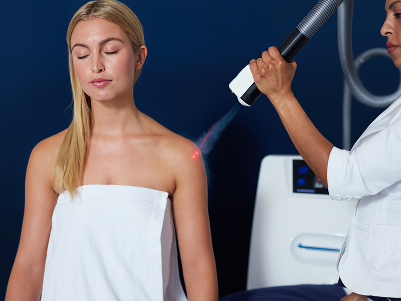

Book an Appointment
To arrange your cryotherapy consultation, call us on 020 7467 3720 or use our contact form. Our team will be happy to answer your questions and book you in at a time that suits you.


Cryotherapy is a safe and effective treatment used to remove unwanted skin lesions by freezing them at extremely low temperatures. At the London Dermatology Centre, we offer cryotherapy as a quick, minimally invasive option for a range of benign and pre-cancerous skin concerns. The procedure is carried out by experienced dermatologists, ensuring both precision and patient safety.

Cryotherapy involves applying liquid nitrogen directly to the targeted area of skin, causing controlled destruction of the unwanted tissue. The intense cold freezes and destroys abnormal skin cells while stimulating the body’s natural healing process. Over the following days or weeks, the treated area will heal, often leaving little or no visible scarring.
Because cryotherapy is quick, well-tolerated, and requires no stitches, it is a popular choice for patients looking for a convenient treatment with minimal downtime.

Cryotherapy is a versatile treatment option that can be used to target a range of skin conditions—both medical and cosmetic. By precisely freezing unwanted or abnormal tissue, it can remove lesions with minimal damage to the surrounding healthy skin.
Common conditions treated with cryotherapy include:



During your consultation, we will carefully assess your skin and the nature of your lesion. If cryotherapy is appropriate, we will explain the procedure in detail, discuss potential risks and benefits, and outline any alternative treatment options so you can make an informed decision.


Cryotherapy is typically a quick, straightforward procedure carried out in the clinic without the need for anaesthesia. The treatment usually takes just a few minutes, depending on the size and number of lesions being treated.
Your dermatologist will begin by cleaning the skin around the lesion. Liquid nitrogen is then applied directly to the target area, either via a fine spray or using a cotton-tipped applicator. The liquid nitrogen rapidly freezes the lesion to a very low temperature, which destroys the abnormal cells while leaving surrounding healthy tissue largely unaffected.

You may feel an intense cold sensation, tingling, or a mild stinging as the nitrogen is applied. This discomfort is usually brief and well tolerated by most patients. For larger lesions or more sensitive areas, the dermatologist may apply the liquid nitrogen in repeated short bursts to ensure thorough treatment while minimising unnecessary tissue damage.
After application, the treated area will begin to thaw naturally. Over the next few hours, it may become red and swollen, and in some cases, a blister may form—this is a normal part of the healing process. Your dermatologist will provide full aftercare instructions, which may include keeping the area clean and dry, avoiding unnecessary friction, and refraining from picking at any scabs or crusts as the skin heals.
Follow-up appointments are not always necessary, but your dermatologist may schedule one if the lesion is large, if several areas were treated, or if the condition being treated requires ongoing monitoring.

One of the advantages of cryotherapy is that recovery is usually straightforward, but following the correct aftercare advice is essential for optimal healing and to reduce the risk of complications.
Immediately after treatment, the treated area may appear red and slightly swollen, and it’s common for a blister to form within a few hours. This blister may be clear or filled with fluid, and in some cases, a small blood blister can develop. Both are normal responses and should be left intact to protect the healing skin underneath. If the blister bursts naturally, simply keep the area clean and apply a sterile dressing if needed.
Over the next few days, the blister may dry and form a crust or scab. It’s important not to pick or scratch at this, as doing so can increase the risk of infection and scarring. The crust will usually fall off naturally within one to three weeks, revealing new skin underneath. In some cases—particularly with larger or deeper lesions—it may take slightly longer for the skin to return to its normal appearance.
You should keep the area dry for at least the first 24 hours and avoid swimming or soaking in baths until the skin has healed. Gentle washing with mild soap and water is fine after this period. Your dermatologist may recommend applying a protective ointment or dressing, especially if the area is prone to friction from clothing or shoes.
Most patients can resume normal activities immediately after treatment, but if the treated site is on a visible area such as the face or hands, you may want to plan for a short period of cosmetic healing time. Your dermatologist will let you know if a follow-up appointment is necessary to assess the results or to carry out any additional treatments.

At the London Dermatology Centre, all cryotherapy treatments are performed by highly trained dermatologists with extensive experience in lesion removal. We prioritise precision, safety, and comfort, ensuring the best possible cosmetic and medical outcomes. We also offer a full range of diagnostic services to ensure any suspicious lesions are fully assessed before treatment.

At the London Dermatology Centre, all cryotherapy treatments are performed by highly trained dermatologists with extensive experience in lesion removal. We prioritise precision, safety, and comfort, ensuring the best possible cosmetic and medical outcomes. We also offer a full range of diagnostic services to ensure any suspicious lesions are fully assessed before treatment.
Most patients experience only mild discomfort during cryotherapy. You may feel a brief stinging or burning sensation while the liquid nitrogen is applied, but this usually subsides quickly. No anaesthetic is typically required.
Healing times vary, but most treated areas recover within 1–3 weeks. Lesions on the legs or areas with slower circulation may take longer. Your dermatologist will advise on aftercare to promote quick healing.
In most cases, cryotherapy leaves minimal or no scarring. However, there may be a slight change in skin colour at the treatment site, particularly in patients with darker skin tones.
Many lesions require only one treatment, but some stubborn or larger growths may need repeat sessions. Your dermatologist will discuss this with you after assessing your skin.
Cryotherapy is generally safe for all skin types, but there is a small risk of pigment changes in darker skin. Your dermatologist will discuss the benefits and risks for your specific skin type.
Yes. Cryotherapy can be used to remove benign lesions such as skin tags or seborrhoeic keratoses for cosmetic purposes, provided they are first confirmed to be non-cancerous.
Temporary redness, swelling, blistering, or mild discomfort are common after treatment. Rarely, infection or changes in pigmentation may occur.
Yes. A consultation ensures the lesion is correctly diagnosed and cryotherapy is the right treatment choice. This is especially important for any lesions that could be cancerous.
Yes, most patients return to normal activities immediately. The treated area may be slightly red or blistered, but downtime is minimal.
You can call the clinic on 020 7467 3720 or use our contact form to arrange your consultation.
The London Dermatology Centre is located at 69 Wimpole Street, London, W1G 8AS, in the renowned Harley Street medical district. We are within easy reach of Oxford Circus, Bond Street, and Regent’s Park Underground stations, making us accessible from across the city.
Our clinic offers a discreet and professional environment where you can receive expert cryotherapy treatment in complete comfort. If you’re travelling by car, pay-and-display parking and private car parks are available nearby.
For directions, travel advice, or to arrange your appointment, please call us on 020 7467 3720
Monday - Friday: 9.00 AM - 5.30 PM
Saturday & Sunday: Closed
69 Wimpole Street,
London W1G 8AS.
To arrange your cryotherapy consultation, call us on 020 7467 3720 or use our contact form. Our team will be happy to answer your questions and book you in at a time that suits you.